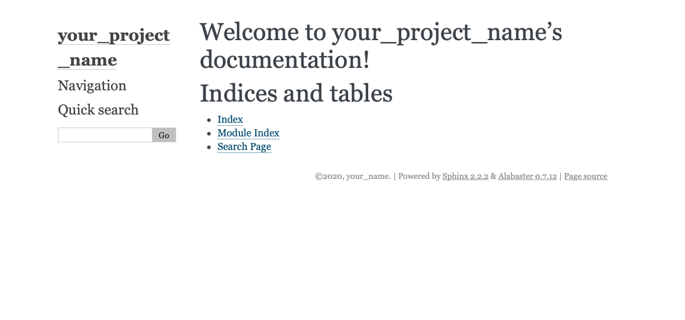

This is the instruction file¶
Follow the steps below will help have a basic understanding of Sphinx building.
Step 1. Package Install and Preparations¶
Install Sphinx:
$ pip install sphinx
Download directory from GitHub:
$ git clone https://github.com/User-zwj/pagetest2.git
Sphinx startup:
$ cd pagetest2
$ mkdir docs
$ cd docs
$ sphinx-quickstart
Once using $ sphinx-quickstart command, you will need to customize it:
> Separate source and build directories (y/n) [n]: n
> Project name: your_project_name
> Author name(s): your_name
> Project release []: 1.0
> Project language [en]: en
You will later have the directory shown below:
Use the code below to setup the webpage:
If you would like to change the project name, copyright, author settings, you can go to conf.py and make corresponding changes.
In order to change the theme to the following theme in the plot,

download the theme first:
$ pip install sphinx-rtd-theme
then change the theme in the conf.py to html_theme = 'sphinx_rtd_theme'.
Now use the following command to setup the webpage:
$ make html
$ open _build/html/index.html
the webpage will then become:

Step 2. Math formulas in LATEX¶
Use command to create latex.rst file:
$ vim latex.rst
and put the following content in latex.rst:
1 2 3 4 5 6 | Write math formula using latex
==============================
.. math::
S = \sum_{k=0}^{N} x_k
|
Then update index.rst by adding latex to it:
1 2 3 4 5 | .. toctree::
:maxdepth: 2
:caption: Contents:
latex
|
Update the webpage and load it:
$ make html
$ open _build/html/index.html
The latex formula will be added to the webpage:

Click Write math formula using latex to access the conten, you will have

Step 3. Image¶
To add a picture, use .. image:: directory_of_the_picture. To store the pictures needed, create images directory under _static directory.
First create loadimage.rst, and add the fllowing content to it:
1 2 3 4 | Load image
==========
.. image:: _static/images/image1.png
|
Then update index.rst by adding loadimage to it:
1 2 3 4 5 6 | .. toctree::
:maxdepth: 2
:caption: Contents:
latex
loadimage
|
Update the webpage and load it:
$ make html
$ open _build/html/index.html
The image will be added to the webpage:

Click Load image to access the content, you will have

Step 4. RST syntax¶
Refer to README file for basic rst syntax.
Click View page source on the webpage and see the command:
Step 5. Load content from .py file¶
First create loadpy.rst, and add the fllowing content to it:
1 2 3 4 5 6 7 8 | Load content from .py file
==========================
This is the content from **module1.py**
.. literalinclude:: ../module1.py
:linenos:
:language: python
|
Then update index.rst by adding loadpy to it:
1 2 3 4 5 6 7 | .. toctree::
:maxdepth: 2
:caption: Contents:
latex
loadimage
loadpy
|
Update the webpage and load it:
$ make html
$ open _build/html/index.html
The loadpy section will be added to the webpage:
Click Load content from .py file to access the content, you will have
Step 6. Load content from .ipynb file¶
Put sample.ipynb in docs directory. Create jupyter.rst, and add the fllowing content to it:
1 2 3 4 5 6 | Load content from Jupyter Notebook
==================================
.. toctree::
sample
|
Then update index.rst by adding jupyter to it:
1 2 3 4 5 6 7 8 | .. toctree::
:maxdepth: 2
:caption: Contents:
latex
loadimage
loadpy
jupyter
|
Update the extension in conf.py:
extensions = [
'sphinx.ext.autodoc',
'sphinx.ext.todo',
'sphinx.ext.intersphinx',
'sphinx.ext.coverage',
'sphinx.ext.mathjax',
'sphinx.ext.viewcode',
'sphinx.ext.githubpages',
'sphinx.ext.napoleon',
'sphinx_rtd_theme',
'nbsphinx',
]
Update the webpage and load it:
$ make html
$ opoen _build/html/index.html
The jupyter section will be added to the webpage:
Click Normal Samples to access the content, you will have